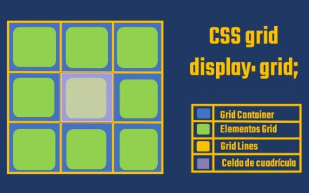
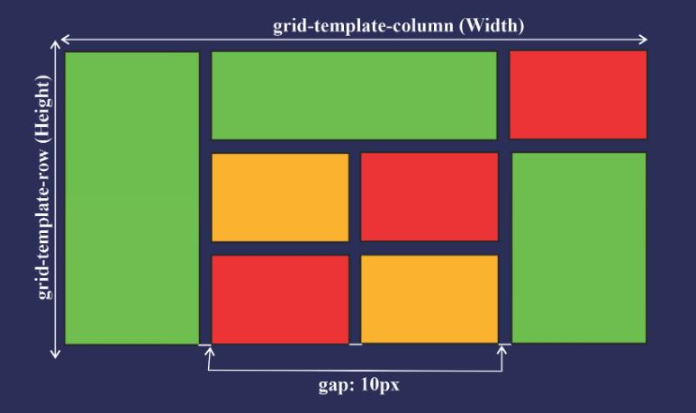
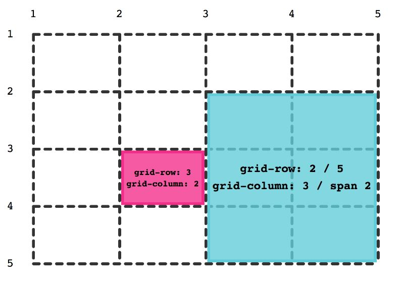
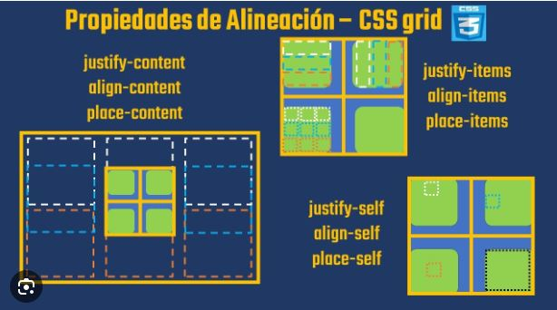

Tema 1. Contenedor de la cuadrícula
El contenedor de la cuadrícula es un elemento fundamental en CSS Grid. Es el
elemento padre que contiene todos los elementos que formarán parte de la cuadrícula en el diseño de
una página web. Al aplicar la propiedad display: grid; a este contenedor, se activa la
funcionalidad
de la cuadrícula en CSS.
La cuadrícula actúa como un lienzo sobre el cual se construye el
diseño de la página. Al definir las reglas de la cuadrícula en el contenedor, puedes lograr una
mayor flexibilidad y control en la disposición de los elementos, permitiendo diseños responsivos y
adaptativos para diferentes tamaños de pantalla.

Ejemplo container:
.grid-container {
display: grid;
}
Tema 2. Definición de columnas y filas
La definición de columnas y filas en CSS Grid se realiza mediante las propiedades
grid-template-columns y grid-template-rows, respectivamente. Estas
propiedades permiten establecer
la estructura de la cuadrícula en términos de tamaño y cantidad de columnas y filas.
Al utilizar grid-template-columns, puedes definir el ancho y la cantidad de columnas en
la cuadrícula. Puedes especificar los anchos de las columnas utilizando unidades de medida, como
píxeles, porcentajes, fracciones, entre otros.
Por otro lado, con grid-template-rows, puedes definir el alto y la cantidad de filas en
la cuadrícula. Al igual que en grid-template-columns, puedes establecer los altos
utilizando unidades de medida o palabras clave.

Ejemplo container:
.grid-container {
display: grid;
/* 3 columnas de igual tamaño */
grid-template-columns: 1fr 1fr 1fr;
/* 2 filas con tamaños específicos */
grid-template-rows: 100px 200px;
}
Tema 3. Posicionamiento de elementos
El posicionamiento de elementos en CSS Grid se logra mediante las propiedades grid-row
y grid-column. Estas propiedades permiten especificar la ubicación de los elementos
dentro de la cuadrícula en términos de filas y columnas.
Con grid-row, puedes definir en qué filas se ubicará un elemento. Puedes utilizar
valores numéricos para indicar filas específicas, como 1 para la primera fila o 2 / 4 para las filas
de la segunda a la cuarta. También puedes usar palabras clave como span para indicar que el elemento
debe ocupar varias filas consecutivas.
Y el grid-column se utiliza para especificar en qué columnas se ubicará un elemento. Al
igual que con grid-row, puedes utilizar valores numéricos para indicar columnas específicas o
palabras clave como span para ocupar varias columnas consecutivas.

Ejemplo item:
.item {
/* El elemento ocupa las filas 1 y 2 */
grid-row: 1 / 3;
/* El elemento ocupa las columnas 2 y 3 */
grid-column: 2 / 4;
}
Tema 4. Espaciado entre filas y columnas
El espaciado entre filas y columnas en CSS Grid se puede controlar mediante la propiedad
grid-gap.
Esta propiedad te permite establecer el tamaño del espacio entre las filas y columnas de la
cuadrícula, lo que proporciona un mejor control visual y separación entre los elementos.
La propiedad grid-gap acepta uno o dos valores, y se utiliza para especificar tanto el
espacio
horizontal como el vertical entre las filas y columnas de la cuadrícula. Puedes utilizar unidades de
medida como píxeles, porcentajes o em, o también puedes utilizar palabras clave como auto, initial o
inherit.
Ejemplo container:
.grid-container {
display: grid;
/* Espacio de 10 píxeles entre filas y columnas */
grid-gap: 10px;
}
Tema 5. Alineación de elementos
La alineación de elementos en CSS Grid se logra mediante las propiedades justify-items,
align-items,
justify-content y align-content. Estas propiedades permiten controlar la
posición y alineación de
los elementos dentro de la cuadrícula en el eje horizontal (principal) y vertical (secundario).
CSS Grid te permiten controlar la alineación y distribución de los elementos dentro de la
cuadrícula. Estas propiedades afectan tanto la alineación individual de los elementos en sus celdas
como la alineación y distribución de los elementos en el eje horizontal y vertical de la cuadrícula.
Experimenta con diferentes valores para lograr la disposición deseada y crear diseños armoniosos.

Ejemplo container:
.grid-container {
display: grid;
/* Centra los elementos horizontalmente */
justify-items: center;
/* Centra los elementos verticalmente */
align-items: center;
/* Distribuye el espacio sobrante entre las columnas */
justify-content: space-between;
/* Distribuye el espacio sobrante entre las filas */
align-content: space-around;
}